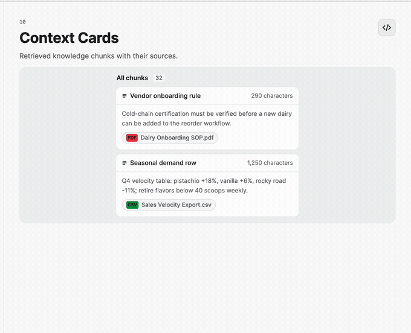
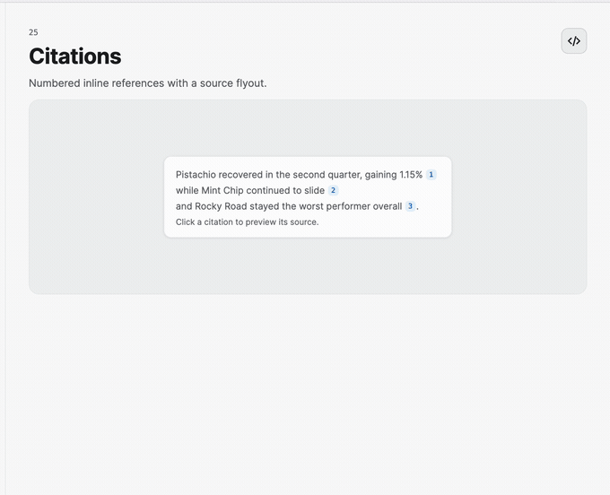
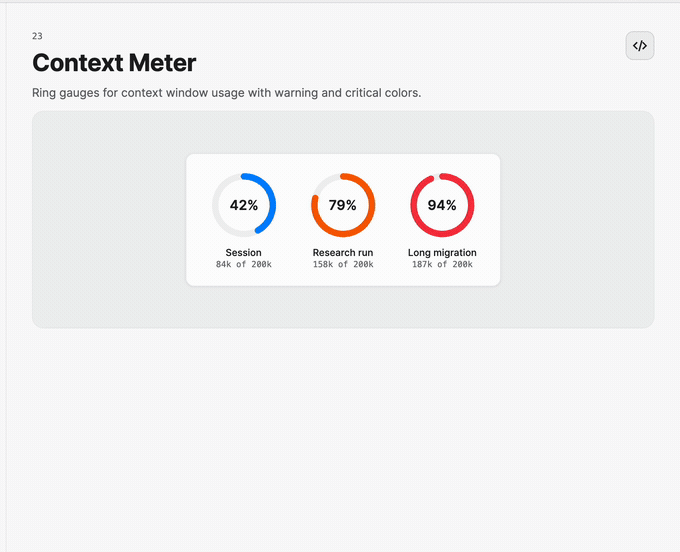

Context and Citations
These controls make grounding visible. Use context cards before or during a run, source and citation chips inside an answer, and the usage meter to show remaining model context.
Retrieved context
<nova:ContextCard Title="Refund policy"
Excerpt="Refunds are available within 30 days…"
Meta="Updated 2 days ago"
SourceLabel="Policy"
SourceName="handbook.md"
SourceUri="https://example.com/handbook" />
ContextCard separates the retrieved excerpt from its source metadata and supports custom source foreground and background brushes.

Inline sources
<WrapPanel>
<TextBlock Text="Pistachio recovered in Q2 " />
<nova:CitationChip Number="1"
Title="Quarterly sales report"
Domain="reports.example.com"
Snippet="Pistachio closed Q2 at +1.15%."
NavigateUri="https://example.com/q2" />
<nova:SourceChip Text="Sales report"
NavigateUri="https://example.com/q2" />
</WrapPanel>
CitationChip opens a source preview and then navigates to NavigateUri. Handle SourceOpened and NavigationFailed, or bind their commands, for telemetry and error reporting. SourceChip is a lighter hyperlink label for a source already explained by surrounding content.

Context-window usage
<nova:ContextUsageMeter Capacity="200000"
UsedTokens="{Binding UsedTokens}"
Label="Research run"
WarningThreshold="0.75"
CriticalThreshold="0.9" />
The meter computes its percentage, label, and sweep angle. Thresholds change semantic color before the context limit is reached.
